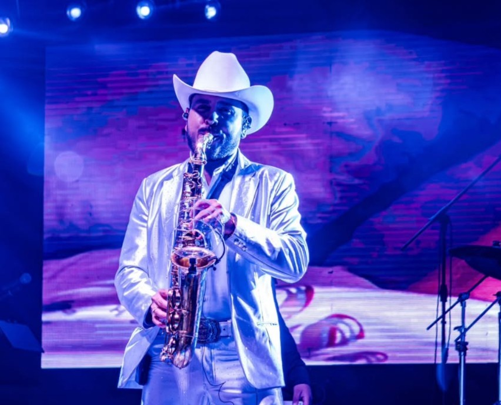
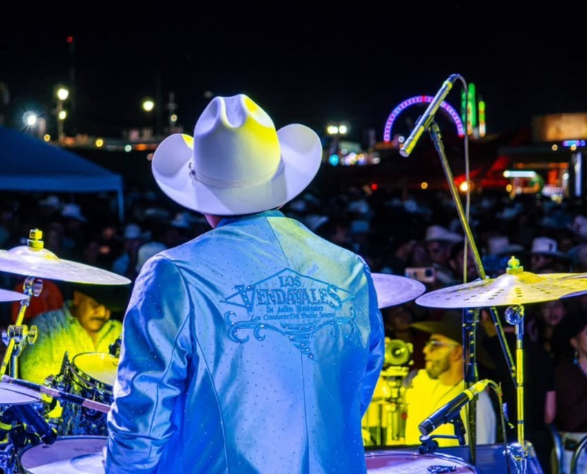
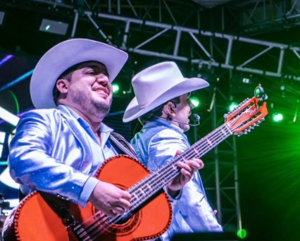
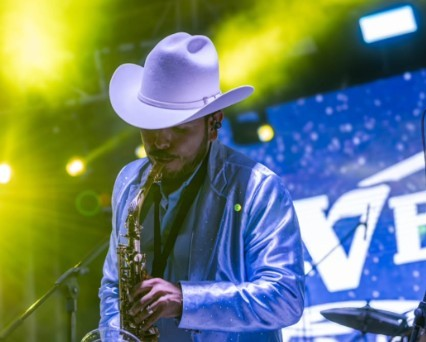
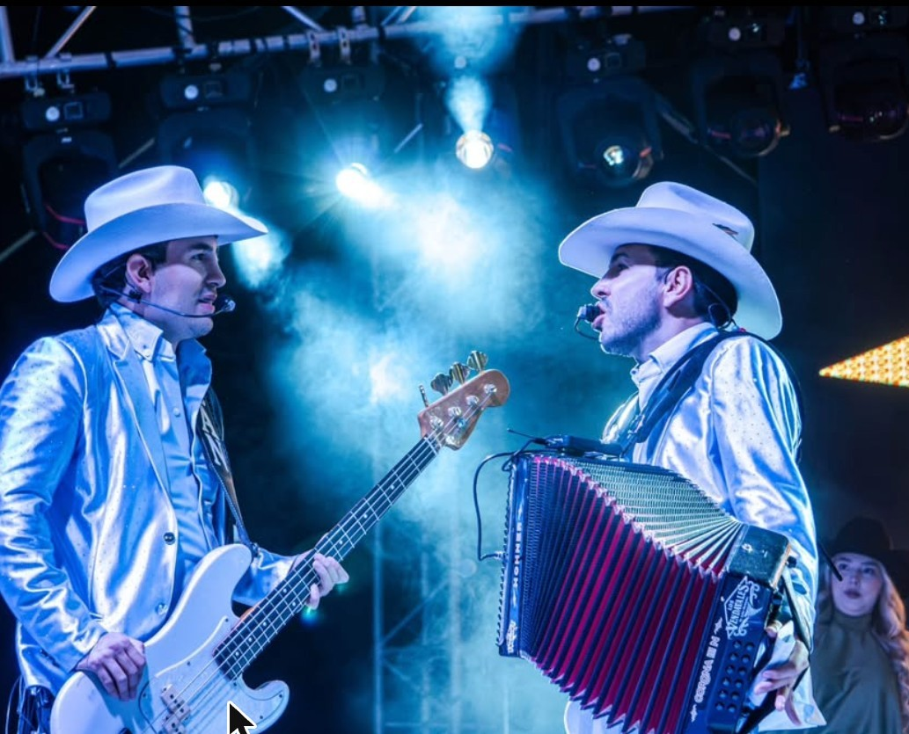
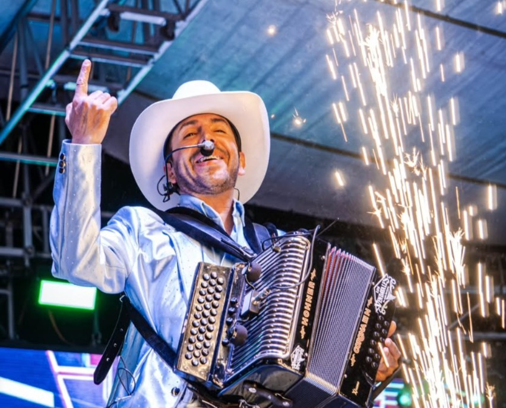
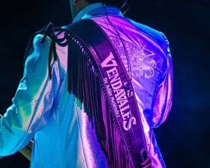
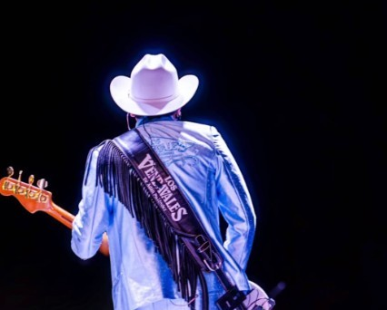
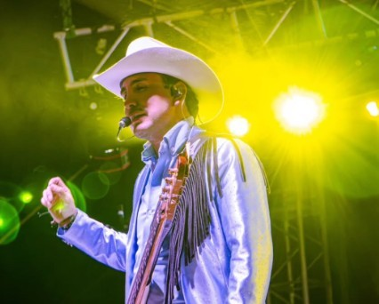
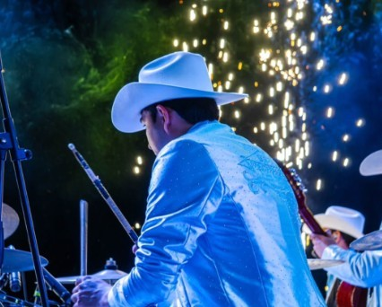

Fotografía, cobertura y promoción de conciertos, palenques y eventos. Mueve el reflector: así vemos cada noche.
Estamos donde se prenden las luces: el primer acordeonazo, la entrada al palenque, la rueda de prensa y la última canción.
Cubrimos la escena regional de Chihuahua y contamos cada evento con fotos y videos que se sienten como estar ahí.
Luces, humo y movimiento: la foto que el artista quiere publicar.

Palenques, ferias y estadios contados en reels y publicaciones.

Presencia de medio en las conferencias de los conciertos.

Anuncios de conciertos, preventas y cuenta regresiva para la noche.
Lo que no se ve desde las gradas: la entrada, los nervios, la fiesta.


SKYE 01A
SKYE 02A
SKYE 03A
SKYE 08A
SKYE 09A
SKYE 11A